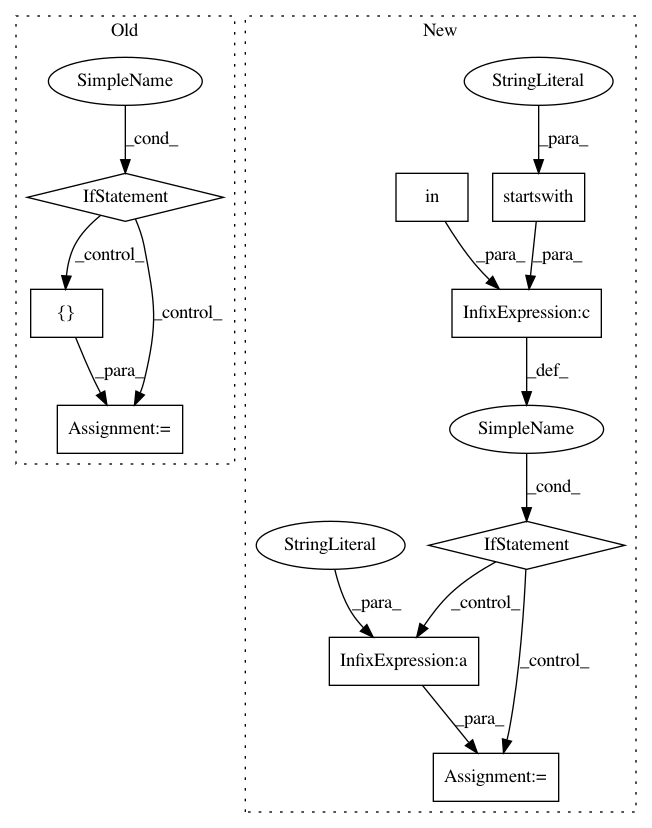

e5b8e81d2d33823142cc88eed6a5368c8e283a98,scipy/spatial/distance.py,,cdist,#Any#Any#Any#,1899
Before Change
dm = np.zeros((mA, mB), dtype=np.double)
// compute blacklist for deprecated kwargs
if(metric in _METRICS["minkowski"].aka or
metric == "test_minkowski" or metric == minkowski):
kwargs_blacklist = ["w", "V", "VI"]
elif(metric in _METRICS["wminkowski"].aka or
metric == "test_wminkowski" or metric == wminkowski):
kwargs_blacklist = ["V", "VI"]
elif(metric in _METRICS["seuclidean"].aka or
metric == "test_seuclidean" or metric == seuclidean):
kwargs_blacklist = ["p", "w", "VI"]
elif(metric in _METRICS["mahalanobis"].aka or
metric == "test_mahalanobis" or metric == mahalanobis):
kwargs_blacklist = ["p", "w", "V"]
else:
kwargs_blacklist = ["p", "w", "V", "VI"]
_filter_deprecated_kwargs(kwargs, kwargs_blacklist)
if callable(metric):
After Change
mstr = metric.lower()
// NOTE: C-version still does not support weights
if "w" in kwargs and not mstr.startswith("test_"):
if mstr in ["seuclidean", "se", "s", "mahalanobis"]:
raise ValueError("metric %s incompatible with weights" % mstr)
// need to use python version for weighting
mstr = "test_%s" % mstr
metric_name = _METRIC_ALIAS.get(mstr, None)
if metric_name is not None:
XA, XB, typ, kwargs = _validate_cdist_input(XA, XB, mA, mB, n,
metric_name, **kwargs)
In pattern: SUPERPATTERN
Frequency: 3
Non-data size: 9
Instances
Project Name: scipy/scipy
Commit Name: e5b8e81d2d33823142cc88eed6a5368c8e283a98
Time: 2017-09-13
Author: apbard@users.noreply.github.com
File Name: scipy/spatial/distance.py
Class Name:
Method Name: cdist
Project Name: scipy/scipy
Commit Name: e5b8e81d2d33823142cc88eed6a5368c8e283a98
Time: 2017-09-13
Author: apbard@users.noreply.github.com
File Name: scipy/spatial/distance.py
Class Name:
Method Name: pdist
Project Name: alfredfrancis/ai-chatbot-framework
Commit Name: f00bbc9ca76a4a1fd9ddc46954a76237ecd4c616
Time: 2016-05-21
Author: alfred.francis@pearldatadirect.com
File Name: iky_server/try.py
Class Name:
Method Name: extract_chunks